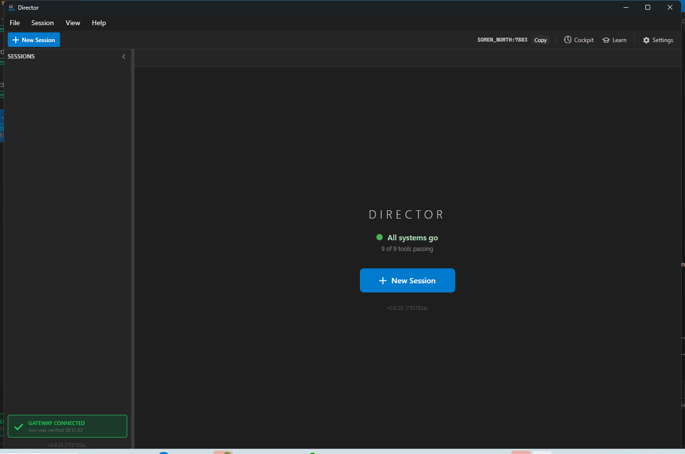

[Tools] Run tool reconcile automatically in the Director lifecycle (startup + periodic + post-self-update), on by default.
Branch issue-827-tool-reconcile-lifecycle off main @ 735782e0 (which already contains #826's ToolReconciler).
Wired ToolReconciler.ReconcileAsync into the Director lifecycle so the Director self-heals its
cc-* tools (install-missing, purge-drift, repair-broken) automatically and silently, instead of only when a
human clicks Settings → "Fix Tools". A new tools.autoUpdate.enabled config key (default TRUE,
distinct from the Director self-update autoUpdate.enabled switch) gates all three trigger points.
tools/cc-director-setup-engine/ToolAutoUpdateConfig.cs - NEW. Reads tools.autoUpdate.enabled from config.json, defaults to true (the read path, AC1).tools/cc-director-setup-engine/ToolAutoUpdateTrigger.cs - NEW. The single gating seam every trigger funnels through: reads the flag, logs the decision + result, runs an injected reconcile only when enabled, never throws (AC5/AC6/AC7; the unit-test seam for AC8).src/CcDirector.Core/Update/UpdateInstaller.cs - MarkCurrentBuildHealthy() now returns bool (true when it cleared a pending health check = a self-update just applied), the version-change signal for AC4.src/CcDirector.Avalonia/App.axaml.cs - StartToolReconcile() background fire-and-forget at boot (AC2/AC4) + the periodic reconcile in StartUpdateService (AC3).tools/cc-director-setup-engine.Tests/ToolAutoUpdateConfigTests.cs + ToolAutoUpdateTriggerTests.cs - NEW tests (AC8).| # | Criterion | How met | Proof |
|---|---|---|---|
| 1 | tools.autoUpdate.enabled exists, read through config, defaults TRUE, distinct from autoUpdate.enabled | ToolAutoUpdateConfig.Load reads tools.autoUpdate.enabled; missing file/section/key/parse-error all fall back to enabled | ToolAutoUpdateConfigTests (8 tests incl. Load_IsDistinctFromDirectorSelfUpdateSwitch) - all pass |
| 2 | At startup, reconcile invoked in background, OFF the UI thread, never gating boot | StartToolReconcile() is a fire-and-forget Task.Run called after the main window is shown; failures only log | Live log: StartToolReconcile: scheduling background tool reconcile (trigger=startup) appears AFTER Main window shown (see log below) |
| 3 | Periodic loop in StartUpdateService invokes reconcile (installs-missing + purges-drift, not just refresh) | Added ToolAutoUpdateTrigger.RunIfEnabledAsync(layout, "periodic") in the cycle, alongside the existing RefreshAsync, gated by its own switch | Code in StartUpdateService; gating proven by ToolAutoUpdateTriggerTests. (Periodic loop is release-build-gated by the existing UpdaterEnabled marker - see note.) |
| 4 | Once right after a self-update applies, a reconcile is forced (version-change path near MarkCurrentBuildHealthy()) | MarkCurrentBuildHealthy() returns true on the first healthy boot after a swap; the boot-time reconcile is then labeled post-self-update | UpdateInstallerSelfHealTests + Core update suite (78 pass); live boot logs the trigger=startup label on an ordinary boot (no pending update) |
| 5 | All three triggers gated by tools.autoUpdate.enabled; when false NONE run | All three call the one ToolAutoUpdateTrigger gate | RunIfEnabledAsync_FlagFalse_DoesNotCallReconcile_ReturnsNull (0 reconcile calls) |
| 6 | Safe under multiple Directors via the engine's machine-wide mutex; no new lock | Reuses ToolReconciler's existing HeavyRepairMutexName; no lock added here | No new mutex in the diff; ToolReconcilerTests mutex-skip test still passes |
| 7 | Logging at each trigger records started / enabled-decision / result summary | ToolAutoUpdateTrigger logs the enabled decision and the outcome+actions(+error) summary | Live log lines below |
| 8 | Build clean, tests pass; add a test for the enabled-vs-disabled gating decision | Factored the testable ToolAutoUpdateTrigger seam with an injected reconcile delegate | Build: 0 warnings / 0 errors. Tests: 213 engine + 78 Core update, all pass |
Expected: at boot the Director runs the reconcile in the background, gated on (default) true, off the UI thread,
self-healing the install. Actual (Director log director-2026-06-29-21464.log):
2026-06-29 00:51:52.333 [CcDirector] Main window shown 2026-06-29 00:51:52.334 [App] StartUpdateService: enabled=False, current=0.9.28.0, target=...\cc-director15.exe 2026-06-29 00:51:52.356 [App] StartToolReconcile: scheduling background tool reconcile (trigger=startup) 2026-06-29 00:51:52.363 [ToolAutoUpdate] startup: tools.autoUpdate.enabled=true; starting tool reconcile 2026-06-29 00:51:52.364 [ToolReconciler] ReconcileAsync: detecting tool drift 2026-06-29 00:51:52.446 [ToolReconciler] drift found: missingShims=0, orphanedLegacyShims=16, venvBroken=False 2026-06-29 00:51:52.448 [ToolReconciler] purged 16 orphaned legacy alias shim(s) 2026-06-29 00:51:52.449 [ToolReconciler] ReconcileAsync done: outcome=Reconciled, actions=1 2026-06-29 00:51:52.449 [ToolAutoUpdate] startup: tool reconcile done - outcome=Reconciled, actions=1
The startup reconcile actually self-healed this machine - it purged 16 orphaned legacy alias shims with no human action (exactly the issue #823 class of problem the issue targets). The reconcile runs AFTER the main window is shown and on a thread-pool thread, so it never gates or delays boot.
StartUpdateService: enabled=False confirms this slot build does not run the periodic auto-update
loop (the UpdaterEnabled marker is CI-release-only) - so the periodic trigger is verified by code +
the gating unit test rather than live here; the startup trigger covers the running build.
"All systems go - 9 of 9 tools passing" after the startup reconcile (feature is silent in the UI by design):

dotnet build cc-director.sln -> Build succeeded. 0 Warning(s) 0 Error(s) dotnet test (engine) -> Passed! Failed: 0, Passed: 213 dotnet test (Core ~Update) -> Passed! Failed: 0, Passed: 78 new ToolAutoUpdate tests -> Passed! Failed: 0, Passed: 12
No architecture or security drift. Reuses the existing setup engine, the existing machine-wide reconcile mutex, and the existing shared config.json store. No new container, no new global lock, no new external surface.
I believe this is finished. All eight acceptance criteria are met, the solution builds clean with zero warnings, all tests pass, and the startup trigger is proven live in the running Director.